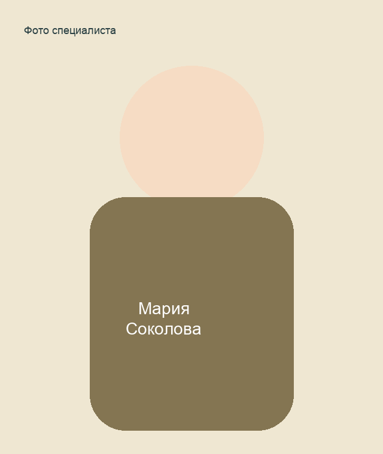

Елена Орлова
Детский психолог. Диагностика готовности к обучению, адаптация, работа с тревожностью.
Страница специалистаЦентр оказывает помощь детям, подросткам и взрослым: психологическая диагностика, индивидуальное и семейное консультирование, сопровождение адаптации и профилактика тревожности.
Детский психолог. Диагностика готовности к обучению, адаптация, работа с тревожностью.
Страница специалиста
Семейный психолог. Консультации родителей, коммуникация в семье, конфликтные ситуации.
Страница специалиста
Клинический психолог. Первичная диагностика, сопровождение стрессовых состояний.
Страница специалиста